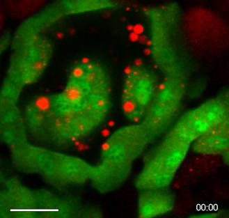
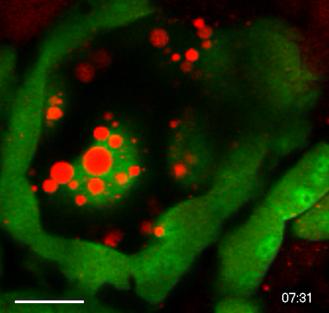
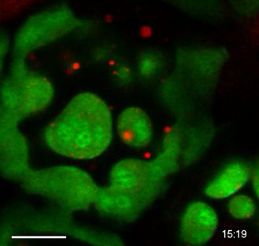

Alveolar shape changes after oxytocin
A real lactating mouse mammary alveolus changes shape and its visible lipid droplets redistribute after injected oxytocin. This experimentally prepared observation is distinct from natural suckling in an intact human breast.
Publication-file clock; the embedded source clock is different.
Lactating mouse, midlactation; anaesthetized, surgically exposed mammary gland with attached vasculature. The source identifies 0.02 IU intraperitoneal oxytocin. Changes in the outline and visible droplets do not measure milk pressure, flow, synthesis or membrane-fission events.
The file lasts 27.2 seconds at 30 publication frames/s. Its embedded clock spans 00:00 to 15:19. General methods describe 5- or 10-second acquisition intervals, but this export’s exact mapping is unverified: no experiment-time conversion is supplied.
Ordered source frames
Frame 0 · source clock 00:00

Frame 400 · source clock 07:31

Frame 600 · source clock 11:16

Frame 815 · source clock 15:19

Masedunskas, Chen, Stussman, Weigert and Mather (2017), Kinetics of milk lipid droplet transport, growth, and secretion revealed by intravital imaging, Molecular Biology of the Cell 28:935–946, Video 5. © Authors; CC BY-NC-SA 3.0. This movie and its stills retain those noncommercial/share-alike terms. The browser WebM is a lossless codec derivative of the original MOV; every decoded RGB frame matches, with only millisecond container-time rounding. No crop, interpolation, colour grading or anatomical overlay. Source and preparation · Frame/timing proof · Reproduction record.